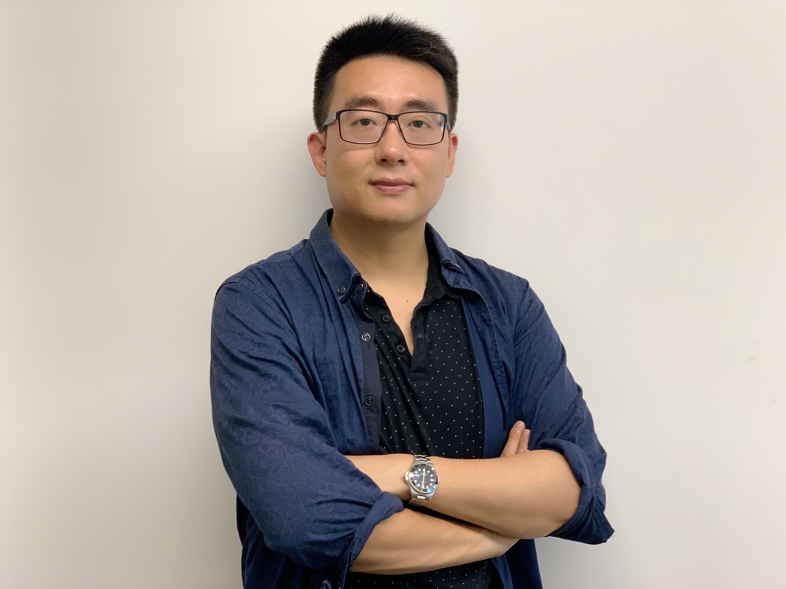

Bio

A/Prof. Xi Zheng is a distinguished leader in cyber-physical systems and AI trustworthiness, with substantial achievements in research, funding, and academic leadership. In 2024, he was awarded the prestigious $960,412 ARC Future Fellowship for “Advancing Robust Autonomy in Cyber-Physical Systems,” making him the only recipient in Software Engineering and one of seven in IT across Australia. This marks the first Future Fellowship in the history of Macquarie University's School of Computing.
A/Prof. Xi Zheng is an ARC Future Fellow and Associate Professor at Macquarie University, Australia, where he leads research on trustworthy AI, neuro-symbolic systems, and safety assurance for learning-enabled autonomous systems. His work focuses on testing, verification, and reliability of AI-enabled cyber-physical systems, including autonomous driving, UAVs, and embodied AI. He has secured over $2.4 million in competitive funding from the Australian Research Council and Data61, including an ARC Future Fellowship, two ARC Linkage Projects, and an ARC Discovery Project.
His recent research advances neuro-symbolic pipelines for trustworthy autonomy, integrating scenario-based testing, formal verification, and learning-enabled reasoning. Dr. Zheng is also a founding leader in building the international research community for trustworthy AI and learning-reasoning systems. He is the Founding Director of the Australian Institute for Learning and Reasoning Systems (AILARS) (https://ailars.org/) and Steering Committee Chair of the International Conference on Learning and Reasoning Systems (ICLARS) (https://iclars-conf.org/). He is also Co-Founder of the Trustworthy Autonomous Cyber-Physical Systems (TACPS) initiative (https://www.tacps.org/), an international research community bringing together AI, software engineering, robotics, and formal methods researchers to advance trustworthy autonomy. TACPS workshops have been co-located with major international venues including ESWEEK 2024, CAV 2025, and AAAI 2026, helping shape research agendas for reliable and deployable AI-enabled autonomous systems.
He has chaired major international initiatives, including Shonan Seminar No. 235, Dagstuhl Seminar No. 26421, and the AAAI-26 Bridge Program (B10). He also serves in international leadership roles, including TPC Chair of MobiQuitous 2026, and contributes to building global collaborations across academia and industry. His research aims to enable safe, reliable, and deployable AI systems for real-world autonomous applications.
News (updated from Nov 2024 onwards)
Stay tuned for the latest updates on my research, publications, events, and more.
- [Apr 2026] I am honored to be invited to join FSE'27 TPC.
- [Mar 2026] I am honored to be invited to join ICSE'27 TPC.
- [Jan 2026] I am honored to serve as TPC Chair for MobiQuitous 2026.
- [Jan 2025] I am honored to be invited to join FSE'26 TPC.
- [Jan 2025] I am honored to be invited to join CAV'25 TPC.
- [Jan 2025] I am honored to be invited to join ICSE'26 TPC.
- [Dec 2024] I am honored to be awarded the Dagstul Seminar for Advancing Testability and Verifiability of CPS with Neurosymbolic and Large Language Models (202501048) scheduled Oct 2026 as the lead organizer along with Ruzica, Simin, Armando.
- [Nov 2024] I am honored to be awarded the Shonan Seminar for LLM-guided Synthesis, Verification, and Testing of Learning-Enabled CPS (235) scheduled Mar 2026 as the lead organizer along with Sanjoy and Simon.
- [Nov 2024] Our paper on Online testing for autonomous drone landing was accepted to ICSE 2025! Congratulations to Linfeng and all the authors and our ARC Linkage partner Skyynetwork. ...